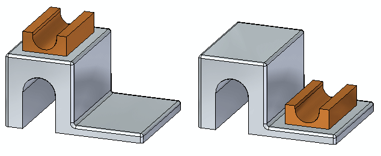
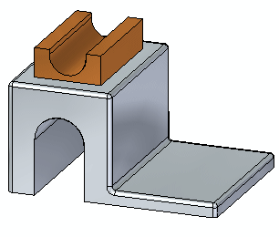
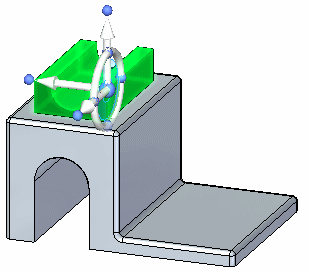
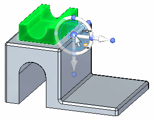
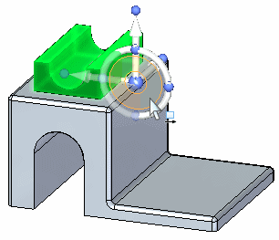
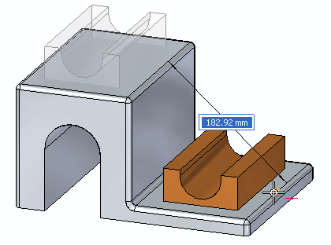
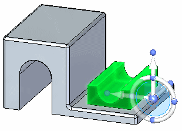
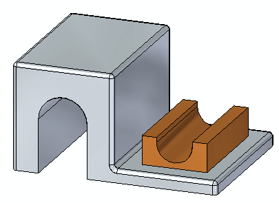

Activity: Detaching and attaching a feature
This activity guides you through the process of detaching an extruded feature and then attaching the copied feature at a new location on the model.
Click here to download the activity file.

-
Open detach_a.par.

-
In PathFinder, click the feature named Protrusion 2.

How to use the Design Intent panel is presented in the help topic, Working with geometric relationships. At this time just suspend the Design Intent setting in the Design Intent panel while moving the cutout feature. This ensures no other faces in the model participate in the move.
-
On the Design Intent panel, uncheck the Design Intent (1) option.

-
Drag the steering wheel origin to the midpoint of the edge shown.

On the command bar, choose the Detach option.
Click the steering wheel tool plane to start the move.

Select the midpoint of the edge shown to complete the move.


-
Right-click the part window and choose the Attach command.

In this activity you learned how to detach a feature, move it to a new location, and then attach the feature to the model. This process is similar to a cut and paste process.
-
Click the Close button in the upper-right corner of the activity window.